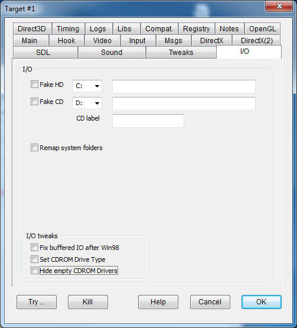

|
Fake HD drive |
FAKEHDDRIVE |
Every file searched with a full path starting with X:\ where X is the drive letter selected in the combo to the right (default C:\) is searched replacing X:\ with the path configured in the field to the right textbox. This makes it possible, for instance, to install in custom folders for old games that only work if installed below C:, or to point to game files in deeper paths that are not supported by the program. A question mark as first character in the path field stands for the target game folder (for instance, the value ?\hd\ means te hd subfolder of the folder game where the hooked program is located). |
|
Fake CD drive |
FAKECDDRIVE |
Same as above, but with reference to fake CDRom drive X:\ (default D:\) In addition, all write access I/O operations on these files will return an error to simulate an readonly CD device type. At all practical effects, the program will detect a CD-rom file system type. BEWARE: in case of multi-CD configuration, the field holds the pathname of the first virtual CD file system. All additional CD file systems will be set by adding a suffix nn to this value with nn ranging from 02 to 09. For instance, if the field is set as "c:\myCD\cd", the files for CD2 will be serached in "c:\myCD\cd02" and so forth up to CD9 searched in "c:\myCD\cd09". It should be noted that while for the first/only CD terminating the field value with a backslash or not is indifferent, for all following virtual disks that will be different since "c:\myCD\cd02" is not the same folder as "c:\myCD\cd\02". |
|
CD label |
Defines the CD label (that is the volume name) of the CD virtually inserted in the fake CD drive BEWARE: in case of multi-CD configuration, the field holds the labels of all CDs separated by a semicolumn ";". For instance, CD labels for the game "Zork Nemesis - the Forbidden Lands" will have to be set as "ZORKNEM_I;ZORKNEM_II;ZORKNEM_III". BEWARE: the space character or any other character but the semicolumn are not treated as separators. |
|
|
Remap system folders |
REMAPSYSFOLDERS |
Remaps the pathnames of files that are located in the Windows system folders to a pathname local to the game folder. For instance, the pathname of the Windows system folder that is usually located in "C:\Windows" is translated to the Windows subfolder of the current folder. This prevents writing / reading files in the system folders and could be helpful to make portable applications with local configuration data. It should be noted that the flag may require early hooking to intercept operations before the first window creation. In addition, it is not always garanteed that all file accesses in system folders could be intercepted and redirected. All remapping folders will have to be created and be existing before the flag usage. |
|
Fix buffered I/O after Win98 |
BUFFEREDIOFIX |
Windows 98 was the last platform to support asynchronous disk I/O from devices such as CD-ROMs. This flag suppresses requests for asynchronous mode, avoiding errors from this operation. |
|
Set CDROM Drive Type |
CDROMDRIVETYPE |
Simulates each disk device to appear as a CDROM type. This allows you to copy the content of some CDs onto a hard disk and override the disk type controls that form some very basic copy protection schemes. |
|
Hide empty CDROM drives |
HIDECDROMEMPTY |
Some old games didn't handle the possibility of having multiple CDROM devices and simply look for the game in the first available CDROM. If you have physical and virtual CDROM devices in your system, it may become complicated to insert a physical CD on a virtual device (or vice versa). This flag removes any CDROM devices that don't mount a CD from the list of available devices, so that you can simply unmount all disks except for the desired one. |